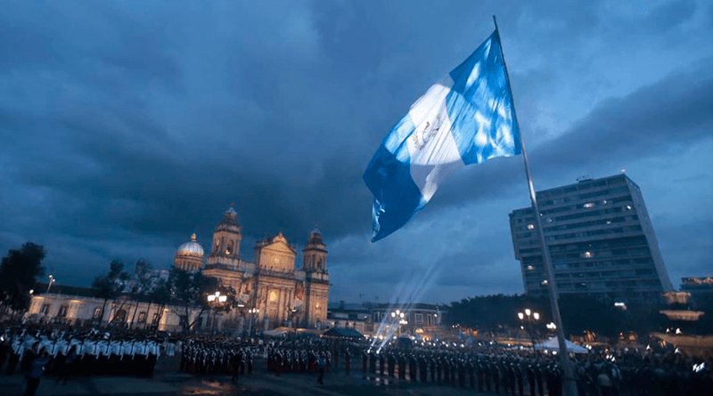

Quetzaltenango celebra con gran fervor la independencia de Guatemala cada 15 de septiembre. Esta fecha es de suma importancia para los quetzaltecos, quienes participan en desfiles, actos cívicos y eventos culturales que resaltan el orgullo y la historia de la independencia del país.
Aquí puedes ver un video que muestra la celebración de la independencia en Quetzaltenango:

Un dato curioso sobre la celebración de la independencia en Quetzaltenango es que la ciudad realiza uno de los desfiles más grandes y coloridos del país, donde participan escuelas, bandas de música y grupos folclóricos de toda la región.